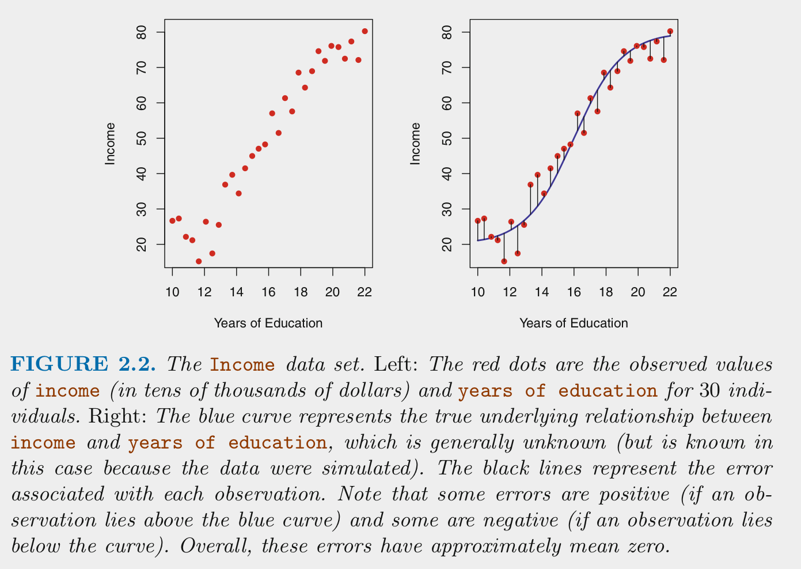

plot(pressure)

demo <- function(x) variable_2
plot(pressure)
library(tidyverse)── Attaching core tidyverse packages ──────────────────────── tidyverse 2.0.0 ──
✔ dplyr 1.1.4 ✔ readr 2.1.5
✔ forcats 1.0.0 ✔ stringr 1.5.1
✔ ggplot2 3.4.4 ✔ tibble 3.2.1
✔ lubridate 1.9.3 ✔ tidyr 1.3.0
✔ purrr 1.0.2
── Conflicts ────────────────────────────────────────── tidyverse_conflicts() ──
✖ dplyr::filter() masks stats::filter()
✖ dplyr::lag() masks stats::lag()
ℹ Use the conflicted package (<http://conflicted.r-lib.org/>) to force all conflicts to become errorsRows: 5
Columns: 1
$ x <int> 1, 2, 3, 4, 5this sentence is in red
This is an alternative method but more complex: I love R.
red yellow green blue
yellow background for better contrast
HTML:
Here’s the answer! This can be as long as you want.
RevealJS does not yet have callout collapse implemented. A workaround is to use code folding:
The simple linear model will underfit the true DGP and therefore it will be biased b/c
it can only represent y as a linear function of x.
The two polynomial models will be generally unbiased b/c they have x represented
with 20th order polynomials.
LASSO will be slightly biased due to regularization but more on that in a later unitUse divs to specify content to only appear in certain formats:
Will only appear in HTML.
Normally, a link to a qmd file functions as a link to the rendered html of that file.
To link to a qmd file that is to be downloaded or viewed as raw text, you must link to the raw.github user content: